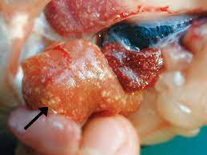
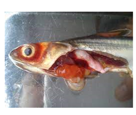
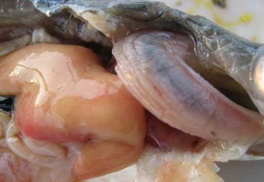
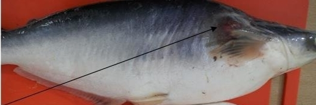
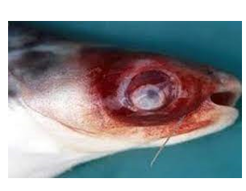
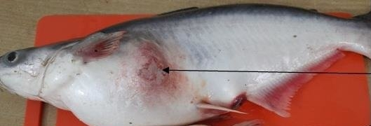
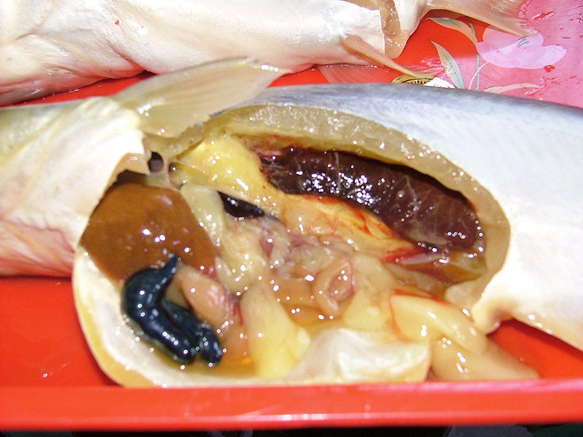
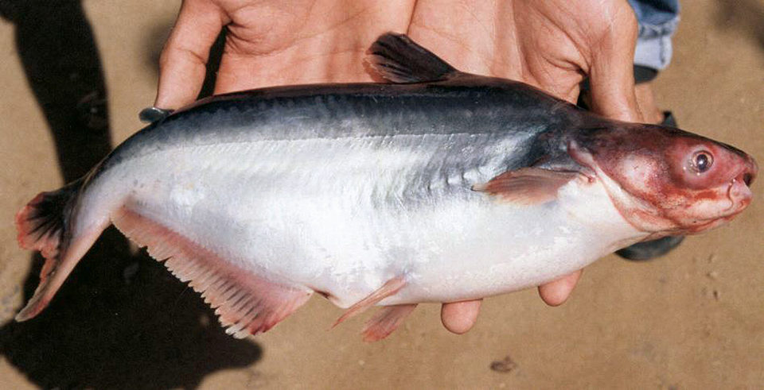

© 2023 Aquaculture Temperature Diseases
Follow Us
Follow our website on chrome

The Temperature range of the Pangasius Fish is in between the 27-30°C
| Disease | Image | Medicine to cure | Company of Medicine |
|---|---|---|---|
| Bacillary Necrosis |  | Vimekon,BKC,Vime-Bitech,Prozyme,Glusome115 Azithrommycin and trimethoprim |
Pfizer,Merck and GlaxoSmithKline |
| Hemorrhagic Disease |  | Chloramine-T,Formalin,FORMACIDE-B - ANADA,PARASITE-S, and Oxytetracycline hydrochloride,Pennox 343 | Aquasonic Pty Ltd,Nobleza Enterprises,Kyoritsu Seiyaku Corporation |
| White Gill and Liver |  | antibiotics, oxytetracycline, ciprofloxacin, enrofloxacin, erythromycin, sulphadiazine, and trimethoprim cephalosporins | Virbac,Zeotis and Bayer |
| Protozoa Disease by Myxobolus |  | Formalin,Malachite Green,Metronidazole | Hikari,Aquatic Eco-Systems Inc,Seachem |
| Disease | Image | Medicine to cure | Company of Medicine |
|---|---|---|---|
| Red Spot Disease |  | Antibiotics,Salt Baths,Parasitic Medications,Antifungals | Aquasonic Pty Ltd,Nobleza Enterprises,Kyoritsu Seiyaku Corporation |
| Columnaris Disease |  | Furazolidone,Sulfonamides,Kanamycin,Florfenicol | Nutra Respiro and Tetracyclin |
| Internal Parasital Disease |  | Piperazine,Metronidazole,Fenbendazole,Levam | Aqua Meds,API (Aquarium Pharmaceuticals, Inc.),Aquatronics |
| External Parasital Disease |  | Malachite Green,Dewormers,Copper-Based Medications | Nobleza Enterprise,Aquasonic Pty Ltd,Sera |
© 2023 Aquaculture Temperature Diseases
Follow our website on chrome